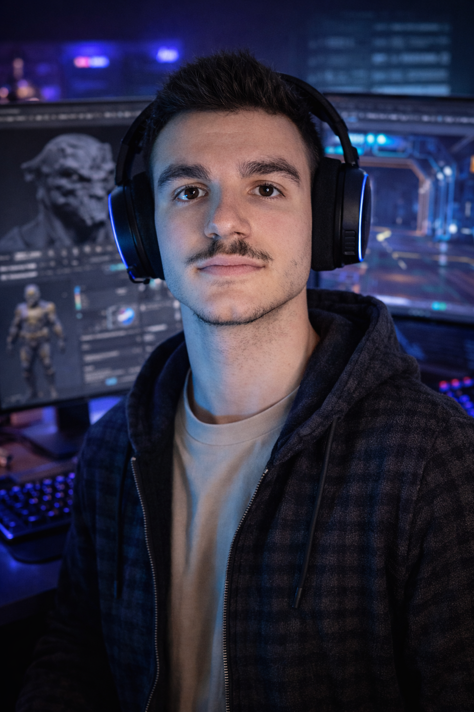

3D ARTIST & GAME DESIGNER
CRAFTING THE
FUTURE
Pushing the boundaries of light, texture, and form through advanced octane-rendered environments and high-fidelity procedural geometries.
Scroll to View
FEATURED WORK
Automotive
Architectural
Abstract

01 / Abstract Motion
CYBERNETIC FLUIDITY
Exploration of procedural movement and refractive index modulation in Cinema 4D.
View Case Study north_east
02 / Architecture
SHADOW STRUCTURE

03 / Hard Surface
CORE ENGINE

04 / Environment
NEBULA REACH
3D
TRANSLATING IMAGINATION INTO GEOMETRY.
With over 3 years of experience in the digital arts, I specialize in creating immersive visual narratives that bridge the gap between realism and surrealism.
My toolkit includes Blender, Unity, Maya, and Substance Painter, allowing me to craft complex procedural systems and photorealistic textures for global brands and independent studios.
10+
Projects in Development
3
Projects Completed
